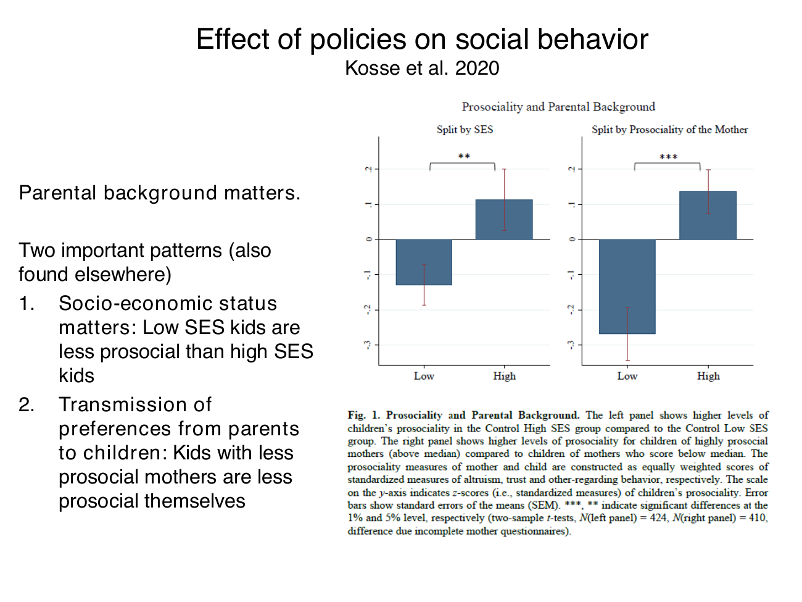

Separate mentoring offer effects from background associations and mechanisms
Useful first: How behavioral economics explains choices—and how evidence tests those explanations, Derive childhood allocation patterns and bound age comparisons
Lesson outline
- 02IntroductionSee the main question, learning objectives and prerequisites.
- 03Key definitions and conceptsGet familiar with the important terms and notation.
- 04Social environment and mentoringCan a policy change measured social preferences, rather than simply predict which children differ?
- 05Worked exampleFollow a complete application of the reasoning.
- 06Practise the reasoningWork through written tasks, with optional support and solutions.
- 07Check your reasoning: an offline quizCheck your choices and see feedback without a connection.
- 08Check your understandingReview the key distinctions and check what you can explain.
- 09Test yourself laterTry another prepared question before rereading.
- 10SourcesFind the materials and limits behind the lesson.
Introduction
In this lesson, separate mentoring offer effects from background associations and mechanisms.
2.1 What you’ll learn
- Interpret the randomized mentoring offer
- Construct a supplied mean-component-z index
- Distinguish causal assignment, descriptive benchmarks, component precision and mechanism limits.
2.2 Before you begin
- Distinguish behavioral explanations from experimental evidence
- Derive childhood allocation patterns and bound age comparisons
Check the foundations
For the hypothetical arithmetic in this lesson, let \(z_A,z_T,z_M\) denote the three component scores after each component has been standardized. Define the mean-component-z index as \(J=(z_A+z_T+z_M)/3\).
Its treatment-minus-control contrast is the arithmetic mean of the three supplied component contrasts. Report that contrast and any supplied benchmark gap in the same mean-component-z index units.
Standardizing the components does not give their average a standard deviation of one: the average’s variance depends on their variances and covariances. A subsequently standardized composite would instead require the composite’s own reference mean and standard deviation, for example \(Z_J=(J-\mu_J)/\sigma_J\) with \(\sigma_J>0\).
Those reference quantities are not supplied, so no composite-SD conversion is requested or inferred. This is a transparent explanation of the toy index definition, not a re-estimate of the study’s empirical effect.
What does random assignment compare, and why is a dictator allocation not identical to a survey statement about trusting others?
Reveal foundation explanation
Random assignment compares assigned intervention/control under its design, not automatically every background difference (O001). An incentivized allocation measures a choice while a trust statement records a belief; neither uniquely identifies every social preference (included O014 measurement foundation and the complete “What “prosociality” measures” passage below).
Key definitions and concepts
- Intention-to-treat effect: The effect of randomized offer assignment, rather than selection into actual participation.
- Mean-component-z index: The expressly defined arithmetic mean of standardized component values.
- Descriptive benchmark: A comparison level that is not itself the randomized causal contrast.
Social environment and mentoring
Can a policy change measured social preferences, rather than simply predict which children differ? The lecture combines background correlations with a randomized mentoring intervention. Keeping those comparisons separate is essential: a treatment can identify the effect of an offered program without proving that all background differences are caused by one family characteristic.

The map follows the supplied experiment and distinguishes the descriptive and causal routes. Random assignment applies within the eligible low-SES sample; it does not randomly assign socioeconomic status (SES).
4.1 The intervention and comparison groups
The lecture attributes the study to Kosse et al. (2020). Primary-school children in Germany are offered a one-year mentoring program: mentors, typically university students, meet children weekly for activities such as museums, the zoo, playgrounds, reading, cooking or conversation.
The program enriches social interactions and introduces a potential prosocial role model. The three displayed groups are low-SES treatment, low-SES control and high-SES control.
Bounded design verification: the authors' May 2018 HCEO working paper, §2.1 and §3.4, and 25–26, verifies stratified random offers among eligible interested low-SES families in Bonn/Cologne. Not everyone assigned obtained or completed mentoring, so the primary comparison is an intention-to-treat effect of the offer, rather than the effect of successful participation for every child.
High-SES families form a benchmark, not a randomly assigned SES treatment. The later publication is Journal of Political Economy 128(2), 434–467 (2020);
the lecture's final 2018 citation refers to a working-paper version of this research.
This distinction matters for policy interpretation. The offered treatment includes implementation constraints such as mentor availability.
Comparing participants selected by successful matching could lose the protection of random assignment; comparing all assigned groups keeps the offer-based causal question clear.
Source slides alone do not supply the compliance details, so this paragraph labels their bounded verification explicitly.
4.2 What “prosociality” measures
Use three facets: altruism, measured through incentivized dictator allocations; trust, measured with three survey statements about whether other people can be trusted, have good intentions and can be relied on even when not known well; and other-regarding behaviour, rated by the mother in an everyday-behaviour questionnaire.
An incentivized allocation, a stated belief and an observer report measure related but distinct things. Trust is not inferred solely from the amount donated in a dictator game.
The main figure uses an equally weighted index of standardized altruism, trust and other-regarding measures. A standardized score measures position relative to its reference distribution in standard-deviation units, rather than a number of sweets or euros.
Combining measures can reduce dependence on one noisy elicitation, but it does not make the three measures identical. Error bars in the supplied charts are standard errors of group means;
significance markers refer to stated comparisons, not a test of every bar against zero.
4.3 Background correlations
The first graph shows a higher average child-prosociality index in the high-SES control group than in the low-SES control group. Its second panel shows higher child scores when maternal prosociality is above its median than below.
The supplied caption marks the SES contrast at the 5% level and the maternal-prosociality contrast at 1%; the stated sample sizes are 424 and 410, with the latter difference attributed to incomplete mother questionnaires.

These are associations. They do not distinguish inherited influences, shared environment, parenting, selection, reporting differences or other correlated inputs. The slide's “transmission” language should therefore not be read as a causal estimate of maternal preferences or SES. The differences are group averages, not a characterization of every child or household in either group.
4.4 The offer changes measured outcomes
The intervention chart shows higher prosociality among low-SES children assigned treatment than among low-SES controls, marked at the 1% level. It reports no statistically significant difference between treated low-SES children and the high-SES control benchmark.
The lecture calls this closing the measured gap: the low-SES treatment mean moves toward that benchmark. A nonsignificant difference does not prove exact equality or a formal equivalence margin.
The causal comparison is treatment versus control within the randomized eligible sample; the cross-SES comparison describes the resulting gap.

The component graphs show higher treatment means for altruism, trust and mother-rated other-regarding behaviour. The first two contrasts have 5% significance markers;
the third has no significance star. Thus the slide's broad “robust across multiple measures” statement means directionally supportive component patterns, not three separately confirmed significant effects.
A positive but imprecisely estimated component is not evidence of an exactly zero effect, either. Caption sample sizes differ because of missing answers or failed control questions.

4.5 Mechanism and policy limits
The lecture proposes that children imitate and internalize behaviour from parents and social role models. The working paper's abstract and §3.3 report a mediation analysis supporting prosocial attachment figures and intensive social interaction.
This is a proposed interpretation with additional assumptions; randomizing the whole mentoring offer does not separately randomize every mechanism.
The intervention's causal effect is stronger evidence than the background correlations, but it does not prove that role-model imitation is the only channel.
The evidence shows that measured prosociality can respond to social environment during childhood. It does not establish that genes are irrelevant, that all socioeconomic differences are environmental, or that this intervention works equally for all ages, countries or outcomes.
Its economic relevance is that prosocial behaviour can influence cooperation and other interactions, making the formation of preferences and possible remedial policies worth studying. The closing “why should economists care?” prompt invites that connection;
it supplies no observed learner answer.
Experimental comparisons, outcome measurement and causal interpretation are core foundations. The particular program, demographic groups and chart values are applications through which to learn that reasoning, with no unsupported claim about exact exam coverage.
Worked example
Prompt: For an explicitly hypothetical eligible low-SES sample, a mentoring offer is randomly assigned against control. Standardized treatment-minus-control component means are altruism 0.3, trust 0.6, mother-rated other-regarding behaviour 0;
define the mean-component-z index as their equal-weight arithmetic mean, with no further composite standardization. The high-SES benchmark mean-component-z index is 0.35 mean-component-z index units above low-SES control.
Compute the offer’s index difference and remaining benchmark gap. Only 60% of those offered complete participation;
why is the assignment contrast still an ITT effect and why can participant-only comparisons lose protection? Suppose the reported index contrast is significant, altruism/trust are starred, mother-rating is unstarred, and treated-low versus high-SES is nonsignificant: interpret without inventing zero/equivalence or a genetic/mechanism conclusion.
State what each facet measures, the background-correlation comparison and the actual program’s scope.
Solution: Mean-component-z index difference is \((0.3+0.6+0)/3=0.30000000\) mean-component-z index units, without an assumed composite standard deviation of one; remaining high-benchmark gap is \(0.35-0.30000000=0.05000000\) in the same mean-component-z index units.
Further composite standardization would require the composite’s own reference mean and standard deviation, which are not supplied. These are invented arithmetic inputs, not a re-estimate.
Randomization is of the offer within eligible interested low-SES families; comparing all assigned preserves the intention-to-treat question even with 60% completion.
Completed participation is selected after assignment; its comparison can reintroduce selection, and dividing by participation is not automatically a valid causal participation estimate without further assumptions.
High versus low SES and mother-child correlations are descriptive, not randomized SES or parental transmission. Altruism uses incentivized dictator allocations, trust uses stated beliefs about others’ trustworthiness/intentions/reliability, and the mother rating is an observer questionnaire;
standardization/equal weighting does not make them identical. Unstarred does not prove zero;
nonsignificance versus high SES does not prove exact equality or formal equivalence. The source component stars support the first two contrasts, not three separately significant effects.
The actual one-year German mentoring offer involves weekly interactions/role models in an eligible voluntary sample, with implementation/compliance limits. Randomizing the whole offer does not isolate one mediator, rule out genes or establish universal effects across countries/ages/outcomes;
it shows measured prosociality can respond to social environment.
Practise the reasoning
Write your reasoning before revealing an explanation. Begin with support, then apply the ideas to another situation.
6.1 Written exercise 1
For an explicitly hypothetical eligible low-SES sample, a mentoring offer is randomly assigned against control.
Solve the following:
- Standardized treatment-minus-control component means are altruism 0.6, trust 0.3, mother-rated other-regarding behaviour 0.3;
- define the mean-component-z index as their equal-weight arithmetic mean, with no further composite standardization.
- The high-SES benchmark mean-component-z index is 0.5 mean-component-z index units above low-SES control.
- Compute the offer’s index difference and remaining benchmark gap.
- Only 70% of those offered complete participation;
- why is the assignment contrast still an ITT effect and why can participant-only comparisons lose protection?
- Suppose the reported index contrast is significant, altruism/trust are starred, mother-rating is unstarred, and treated-low versus high-SES is nonsignificant: interpret without inventing zero/equivalence or a genetic/mechanism conclusion.
- State what each facet measures, the background-correlation comparison and the actual program’s scope.
Show a hint
Pause before calculating or choosing an explanation:
- What quantities, actors or outcomes are being compared? Write their roles, units and dates beside them.
- Which condition decides whether the relationship applies? Check the relevant definition before using a formula or classifying the case.
- What would have to remain fixed for your comparison to be meaningful? Work through one link in the reasoning at a time.
- How could you check the direction, boundary case or alternative explanation before stating your conclusion?
A local draft for your own study.
Reveal explanation
Solution: Mean-component-z index difference is \((0.6+0.3+0.3)/3=0.40000000\) mean-component-z index units, without an assumed composite standard deviation of one; remaining high-benchmark gap is \(0.5-0.40000000=0.10000000\) in the same mean-component-z index units.
Further composite standardization would require the composite’s own reference mean and standard deviation, which are not supplied. These are invented arithmetic inputs, not a re-estimate.
Randomization is of the offer within eligible interested low-SES families; comparing all assigned preserves the intention-to-treat question even with 70% completion.
Completed participation is selected after assignment; its comparison can reintroduce selection, and dividing by participation is not automatically a valid causal participation estimate without further assumptions.
High versus low SES and mother-child correlations are descriptive, not randomized SES or parental transmission. Altruism uses incentivized dictator allocations, trust uses stated beliefs about others’ trustworthiness/intentions/reliability, and the mother rating is an observer questionnaire;
standardization/equal weighting does not make them identical. Unstarred does not prove zero;
nonsignificance versus high SES does not prove exact equality or formal equivalence. The source component stars support the first two contrasts, not three separately significant effects.
The actual one-year German mentoring offer involves weekly interactions/role models in an eligible voluntary sample, with implementation/compliance limits. Randomizing the whole offer does not isolate one mediator, rule out genes or establish universal effects across countries/ages/outcomes;
it shows measured prosociality can respond to social environment.
6.2 Written exercise 2
For an explicitly hypothetical eligible low-SES sample, a mentoring offer is randomly assigned against control.
Solve the following:
- Standardized treatment-minus-control component means are altruism 0.3, trust 0.3, mother-rated other-regarding behaviour 0;
- define the mean-component-z index as their equal-weight arithmetic mean, with no further composite standardization.
- The high-SES benchmark mean-component-z index is 0.25 mean-component-z index units above low-SES control.
- Compute the offer’s index difference and remaining benchmark gap.
- Only 65% of those offered complete participation;
- why is the assignment contrast still an ITT effect and why can participant-only comparisons lose protection?
- Suppose the reported index contrast is significant, altruism/trust are starred, mother-rating is unstarred, and treated-low versus high-SES is nonsignificant: interpret without inventing zero/equivalence or a genetic/mechanism conclusion.
- State what each facet measures, the background-correlation comparison and the actual program’s scope.
A local draft for your own study.
Reveal explanation
Solution: Mean-component-z index difference is \((0.3+0.3+0)/3=0.20000000\) mean-component-z index units, without an assumed composite standard deviation of one; remaining high-benchmark gap is \(0.25-0.20000000=0.05000000\) in the same mean-component-z index units.
Further composite standardization would require the composite’s own reference mean and standard deviation, which are not supplied. These are invented arithmetic inputs, not a re-estimate.
Randomization is of the offer within eligible interested low-SES families; comparing all assigned preserves the intention-to-treat question even with 65% completion.
Completed participation is selected after assignment; its comparison can reintroduce selection, and dividing by participation is not automatically a valid causal participation estimate without further assumptions.
High versus low SES and mother-child correlations are descriptive, not randomized SES or parental transmission. Altruism uses incentivized dictator allocations, trust uses stated beliefs about others’ trustworthiness/intentions/reliability, and the mother rating is an observer questionnaire;
standardization/equal weighting does not make them identical. Unstarred does not prove zero;
nonsignificance versus high SES does not prove exact equality or formal equivalence. The source component stars support the first two contrasts, not three separately significant effects.
The actual one-year German mentoring offer involves weekly interactions/role models in an eligible voluntary sample, with implementation/compliance limits. Randomizing the whole offer does not isolate one mediator, rule out genes or establish universal effects across countries/ages/outcomes;
it shows measured prosociality can respond to social environment.
6.3 Written exercise 3
For an explicitly hypothetical eligible low-SES sample, a mentoring offer is randomly assigned against control.
Solve the following:
- Standardized treatment-minus-control component means are altruism 0.6, trust 0.6, mother-rated other-regarding behaviour 0;
- define the mean-component-z index as their equal-weight arithmetic mean, with no further composite standardization.
- The high-SES benchmark mean-component-z index is 0.45 mean-component-z index units above low-SES control.
- Compute the offer’s index difference and remaining benchmark gap.
- Only 75% of those offered complete participation;
- why is the assignment contrast still an ITT effect and why can participant-only comparisons lose protection?
- Suppose the reported index contrast is significant, altruism/trust are starred, mother-rating is unstarred, and treated-low versus high-SES is nonsignificant: interpret without inventing zero/equivalence or a genetic/mechanism conclusion.
- State what each facet measures, the background-correlation comparison and the actual program’s scope.
A local draft for your own study.
Reveal explanation
Solution: Mean-component-z index difference is \((0.6+0.6+0)/3=0.40000000\) mean-component-z index units, without an assumed composite standard deviation of one; remaining high-benchmark gap is \(0.45-0.40000000=0.05000000\) in the same mean-component-z index units.
Further composite standardization would require the composite’s own reference mean and standard deviation, which are not supplied. These are invented arithmetic inputs, not a re-estimate.
Randomization is of the offer within eligible interested low-SES families; comparing all assigned preserves the intention-to-treat question even with 75% completion.
Completed participation is selected after assignment; its comparison can reintroduce selection, and dividing by participation is not automatically a valid causal participation estimate without further assumptions.
High versus low SES and mother-child correlations are descriptive, not randomized SES or parental transmission. Altruism uses incentivized dictator allocations, trust uses stated beliefs about others’ trustworthiness/intentions/reliability, and the mother rating is an observer questionnaire;
standardization/equal weighting does not make them identical. Unstarred does not prove zero;
nonsignificance versus high SES does not prove exact equality or formal equivalence. The source component stars support the first two contrasts, not three separately significant effects.
The actual one-year German mentoring offer involves weekly interactions/role models in an eligible voluntary sample, with implementation/compliance limits. Randomizing the whole offer does not isolate one mediator, rule out genes or establish universal effects across countries/ages/outcomes;
it shows measured prosociality can respond to social environment.
6.4 Another chance to practise
Treated low-SES and high-SES groups differ nonsignificantly.
Solve the following:
- Does that prove exact equality or that SES was randomized?
A local draft for your own study.
Reveal explanation
No. Nonsignificance is not an equivalence proof, and high SES is a descriptive benchmark. Causal identification comes from randomized offers within the eligible low-SES sample.
Check your reasoning: an offline quiz
Choose one answer per question. Check individual answers or check the whole quiz. Each option includes feedback on the reasoning, and everything works offline.
Reveal explanation
The supplied index is \((0.3+0.6+0)/3=0.3\), with no additional composite standardization.
Reveal explanation
Subtract the offer difference from the stated descriptive benchmark gap.
Reveal explanation
Keep randomized assignment, actual participation and descriptive background comparisons distinct.
Check your understanding
- Interpret the randomized mentoring offer
- Construct a supplied mean-component-z index
- Distinguish causal assignment, descriptive benchmarks, component precision and mechanism limits.
Test yourself later
Return to these questions after a break, before rereading the explanation. Use a question you have not just viewed.
9.1 Review question 1
For an explicitly hypothetical eligible low-SES sample, a mentoring offer is randomly assigned against control.
Solve the following:
- Standardized treatment-minus-control component means are altruism 0.9, trust 0.3, mother-rated other-regarding behaviour 0.3;
- define the mean-component-z index as their equal-weight arithmetic mean, with no further composite standardization.
- The high-SES benchmark mean-component-z index is 0.55 mean-component-z index units above low-SES control.
- Compute the offer’s index difference and remaining benchmark gap.
- Only 80% of those offered complete participation;
- why is the assignment contrast still an ITT effect and why can participant-only comparisons lose protection?
- Suppose the reported index contrast is significant, altruism/trust are starred, mother-rating is unstarred, and treated-low versus high-SES is nonsignificant: interpret without inventing zero/equivalence or a genetic/mechanism conclusion.
- State what each facet measures, the background-correlation comparison and the actual program’s scope.
A local draft for your own study.
Reveal explanation
Solution: Mean-component-z index difference is \((0.9+0.3+0.3)/3=0.50000000\) mean-component-z index units, without an assumed composite standard deviation of one; remaining high-benchmark gap is \(0.55-0.50000000=0.05000000\) in the same mean-component-z index units.
Further composite standardization would require the composite’s own reference mean and standard deviation, which are not supplied. These are invented arithmetic inputs, not a re-estimate.
Randomization is of the offer within eligible interested low-SES families; comparing all assigned preserves the intention-to-treat question even with 80% completion.
Completed participation is selected after assignment; its comparison can reintroduce selection, and dividing by participation is not automatically a valid causal participation estimate without further assumptions.
High versus low SES and mother-child correlations are descriptive, not randomized SES or parental transmission. Altruism uses incentivized dictator allocations, trust uses stated beliefs about others’ trustworthiness/intentions/reliability, and the mother rating is an observer questionnaire;
standardization/equal weighting does not make them identical. Unstarred does not prove zero;
nonsignificance versus high SES does not prove exact equality or formal equivalence. The source component stars support the first two contrasts, not three separately significant effects.
The actual one-year German mentoring offer involves weekly interactions/role models in an eligible voluntary sample, with implementation/compliance limits. Randomizing the whole offer does not isolate one mediator, rule out genes or establish universal effects across countries/ages/outcomes;
it shows measured prosociality can respond to social environment.
9.2 Review question 2
For an explicitly hypothetical eligible low-SES sample, a mentoring offer is randomly assigned against control.
Solve the following:
- Standardized treatment-minus-control component means are altruism 0.3, trust 0.6, mother-rated other-regarding behaviour 0.3;
- define the mean-component-z index as their equal-weight arithmetic mean, with no further composite standardization.
- The high-SES benchmark mean-component-z index is 0.5 mean-component-z index units above low-SES control.
- Compute the offer’s index difference and remaining benchmark gap.
- Only 55% of those offered complete participation;
- why is the assignment contrast still an ITT effect and why can participant-only comparisons lose protection?
- Suppose the reported index contrast is significant, altruism/trust are starred, mother-rating is unstarred, and treated-low versus high-SES is nonsignificant: interpret without inventing zero/equivalence or a genetic/mechanism conclusion.
- State what each facet measures, the background-correlation comparison and the actual program’s scope.
A local draft for your own study.
Reveal explanation
Solution: Mean-component-z index difference is \((0.3+0.6+0.3)/3=0.40000000\) mean-component-z index units, without an assumed composite standard deviation of one; remaining high-benchmark gap is \(0.5-0.40000000=0.10000000\) in the same mean-component-z index units.
Further composite standardization would require the composite’s own reference mean and standard deviation, which are not supplied. These are invented arithmetic inputs, not a re-estimate.
Randomization is of the offer within eligible interested low-SES families; comparing all assigned preserves the intention-to-treat question even with 55% completion.
Completed participation is selected after assignment; its comparison can reintroduce selection, and dividing by participation is not automatically a valid causal participation estimate without further assumptions.
High versus low SES and mother-child correlations are descriptive, not randomized SES or parental transmission. Altruism uses incentivized dictator allocations, trust uses stated beliefs about others’ trustworthiness/intentions/reliability, and the mother rating is an observer questionnaire;
standardization/equal weighting does not make them identical. Unstarred does not prove zero;
nonsignificance versus high SES does not prove exact equality or formal equivalence. The source component stars support the first two contrasts, not three separately significant effects.
The actual one-year German mentoring offer involves weekly interactions/role models in an eligible voluntary sample, with implementation/compliance limits. Randomizing the whole offer does not isolate one mediator, rule out genes or establish universal effects across countries/ages/outcomes;
it shows measured prosociality can respond to social environment.
Sources
Show materials and lesson scope
- L4 BE_formation IES 2026.pdf, physical PDF pp. 17–23
- L4 BE_formation IES 2026.pdf, physical PDF pp. 18–23
- L4 BE_formation IES 2026.pdf, physical PDF pp. 18
- L4 BE_formation IES 2026.pdf, physical PDF pp. 18, 21
- L4 BE_formation IES 2026.pdf, physical PDF pp. 19
- L4 BE_formation IES 2026.pdf, physical PDF pp. 20–22
- L4 BE_formation IES 2026.pdf, physical PDF pp. 20
- L4 BE_formation IES 2026.pdf, physical PDF pp. 20, 23
- L4 BE_formation IES 2026.pdf, physical PDF pp. 21
- L4 BE_formation IES 2026.pdf, physical PDF pp. 22
- L4 BE_formation IES 2026.pdf, physical PDF pp. 18, 23
- L4 BE_formation IES 2026.pdf, physical PDF pp. 23
Numerical and contextual illustrations are hypothetical unless explicitly described as a reported result. Historical data, model assumptions and unresolved source differences retain their stated limits.
These exercises are for self-study. Viewing a prepared item or solution may make that item unsuitable as a fresh check in a tutor chat. This page does not record an assessed learning result.